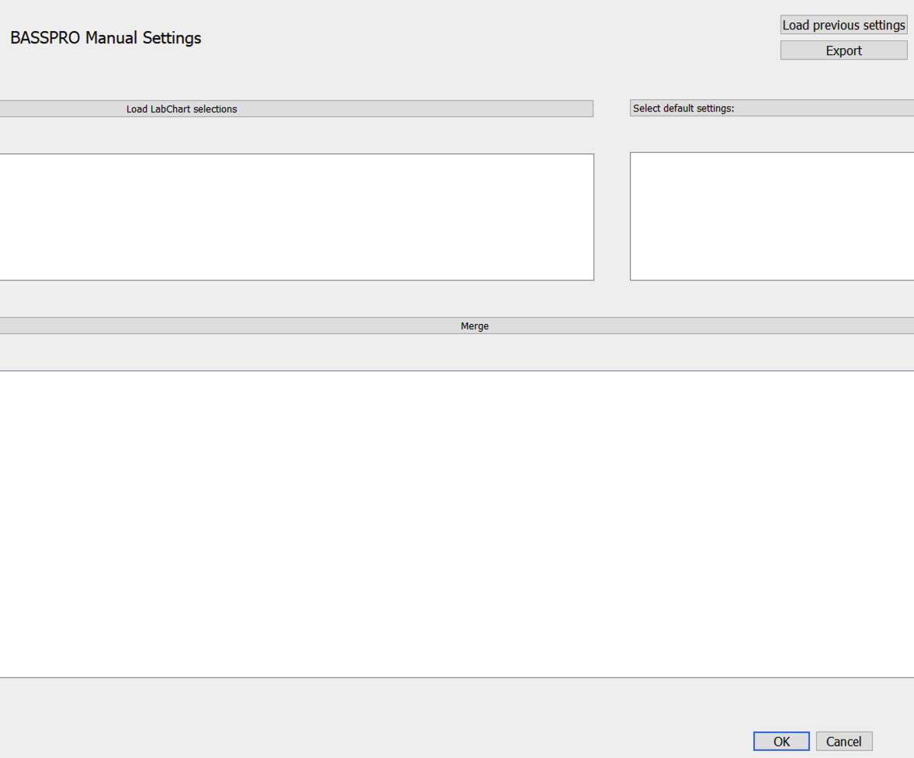

7. Manual Settings Configuration¶
Manual settings are unique in that you must load experimental settings and additional LabChart input from the DataPad. For help on DataPad export, see DataPad Export.
You can either create a new manual selection settings file or open an existing one. With both options you can edit the table manually within the subGUI.
7.1. New Settings File¶
Click the
Manual Settingsbutton (7) to open the Manual Settings subGUI (Figure 12). Figure 12 Manual settings subGUI.¶
This subGUI consists of three tables that populate with the appropriate settings from your input.
Click
Select default settings:and choose an experimental design from the dropdown menu that best fits your experiment.Make necessary changes in the table of the subGUI that reflect your experiment exactly.
- Click
Load LabChart selectionsto navigate a file dialog and select the .txt files that are the exported LabChart DataPad views. Note
This is the DataPad export, NOT the text file export of the whole signal file.
- Click
After confirming your choices, click
Mergeto create your Manual Settings configuration file.
7.2. Existing Manual Settings Files¶
Click the
Manual Settingsbutton (7) to open the Manual Settings subGUI (Figure 12).This subGUI consists of three tables that populate with the appropriate settings from your input.
Click
Load previous settingsto navigate a file dialog and select an existing manual settings file.Make necessary changes in the table of the subGUI that reflect your experiment exactly.
- Click
Load LabChart selectionsto navigate a file dialog and select the .txt files that are the exported LabChart DataPad views. Note
This is the DataPad export, NOT the text file export of the whole signal file.
- Click
After confirming your choices, click
Mergeto create your Manual Settings configuration file.